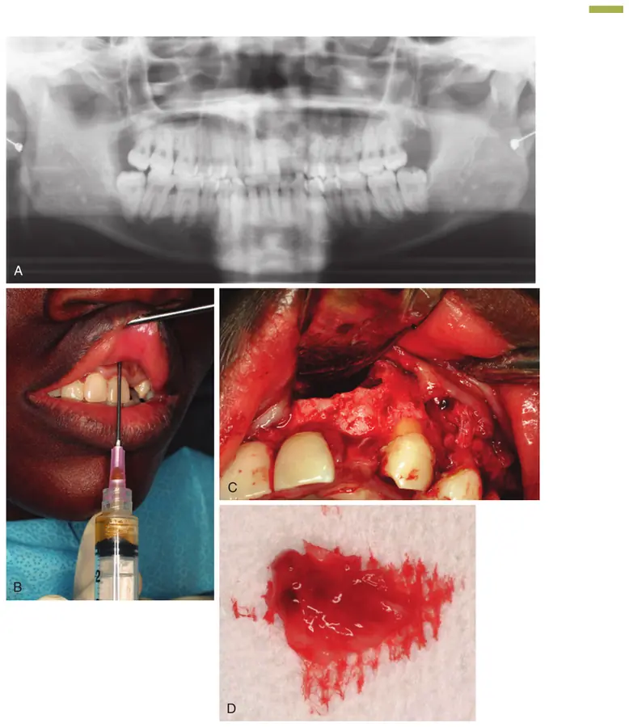
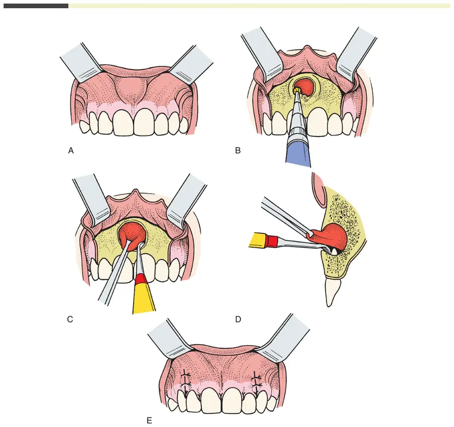

نسخه استخراجشده؛ ترجمه یا تأیید علمی انجام نشده است. وضعیت: captured
نخست یک اطمینان: اعمال و اصول بیوپسی در بافتهای سخت تفاوتی با آنچه بیوپسی بافت نرم را هدایت میکند ندارند — ولی چند جنبهی افزوده باید در نظر گرفته شوند.

و یک قاعدهی سختگیرانه: هر ضایعهای روی بافتهای استخوانی فکها یا درون آنها، موشکافی دندانپزشک را الزامی میکند تا تشخیص قطعی به دست آید.
فلپ موکوپریوستئال — پنج قاعده:
آسپیراسیون احتیاطی — گامی که نباید از قلم بیفتد: آسپیراسیون همهی ضایعات داخلاستخوانی باید بهطور روتین پیش از باز کردن نقص استخوانی انجام شود تا مشخص گردد آیا حاوی مایع — از جمله خون — است.
پنجرهی استخوانی: ضایعات داخلاستخوانی فکها عموماً به ایجاد یک پنجرهی کورتیکال برای دسترسی نیاز دارند. اگر صفحهی کورتیکال سالم باشد، یک فرز جراحی گِرد زیر شستوشوی مداوم مایع میتواند برای ایجاد پنجرهی استخوانی روی محل ضایعه به کار رود.
و یک یافتهی لمسی که معنا دارد: ناحیهای که با فشار انگشتان فرو میرود و حس اسفنجی دارد، معمولاً نشاندهندهی خوردگی یا نازک شدن صفحهی کورتیکال است — که ضایعهی نئوپلاستیک مهاجمتری را مطرح میکند.
پس از بیوپسی برشی برای تشخیص: یک گزارش پاتولوژی مثبت — که تغییرات دیسپلاستیک یا بدخیمی را نشان میدهد — عموماً برداشت جراحی مناسب ضایعه و بافتهای مجاور را الزامی میکند، آنگونه که تشخیص بافتشناختی نشان میدهد. این ممکن است ارجاع به جراح دهان و فک و صورت یا متخصص دیگر سر و گردن که در مدیریت بدخیمیها تجربه دارد را ضروری کند.

و حالا مهمترین جملهی این درس: یک گزارش بیوپسی منفی هرگز نباید بهظاهر پذیرفته شود، بلکه باید با در نظر داشتن یافتههای بالینی و تاریخی تفسیر گردد.
و برنامهی پیگیری پیشنهادی:
و یک دستور همیشگی به بیمار: بیماران باید همیشه توصیه شوند که اگر میان ویزیتها هر تغییر بالینی یا علامت جدیدی دیدند، بیدرنگ با دندانپزشک تماس بگیرند.
و دربارهی خودِ گزارش: اگر هرگونه ابهامی دربارهی محتویات گزارش وجود دارد، دندانپزشک باید از پاتولوژیست توضیح بخواهد. و گزارشهای بازگشتی از پاتولوژیست باید بیدرنگ مورد اقدام قرار گیرند؛ بیمار باید از نتایج مطلع شود، و اگر نتایج غیرمنتظره یا مثبتاند و نیازمند درمان بیشتر، بیمار باید حضوری توسط دندانپزشک مشاوره شود.